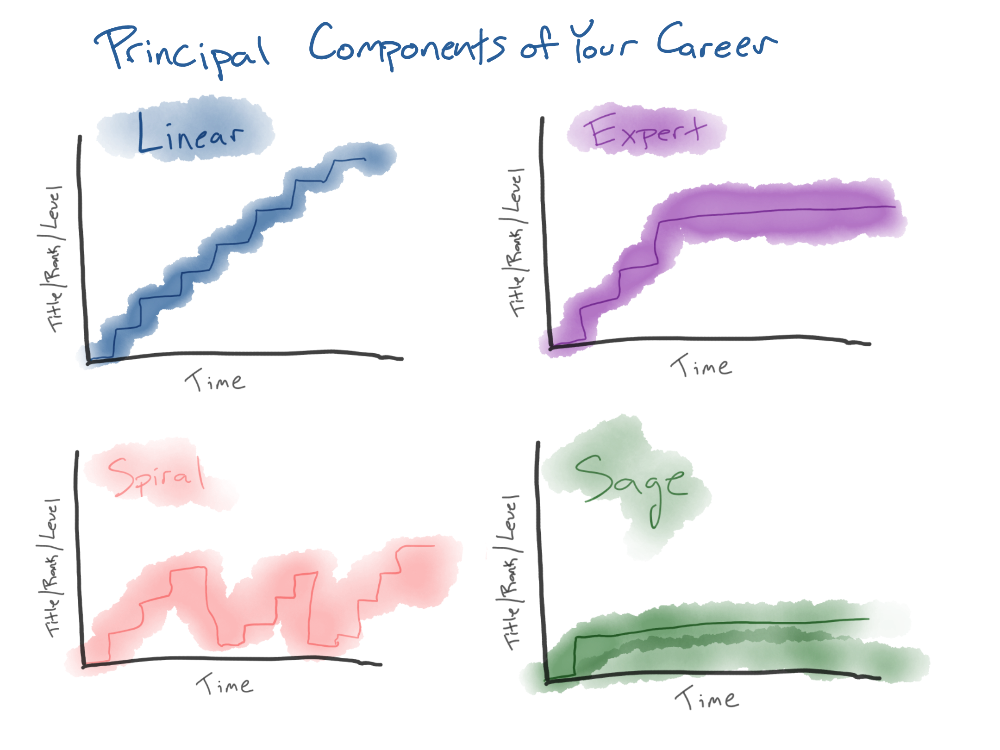

The Principal Components of Your Career
What are your goals? What do you want your career to look like? You might have heard similar questions from a well-intentioned manager or coach in the past. These are helpful questions to spark ideas and discussion, but very few people are walking around with succinct answers to these kinds of questions in their head. For me, I struggled with a question like this because for the longest time I thought there was really only one "way" that a career could look (or worse, 'should' look). In an organization where I had spent some significant time, the name of the game was "up or out" - you work hard to get promotions, as fast as you can, and never look back. I personally found it very refreshing to eventually realize there are alternatives. Here, I present a framework that I call "The Principal Components of Your Career". This is an adaptation of an idea I originally learned from Jim Clawson at Darden, but an ML twist. What follows is a description of the framework and it makes the most sense in the context of large and established organizations. However, as I'll mention below, I think startups and entrepreneurship are important to factor and I think can fit in as well.
Career Archetypes
It is helpful to realize that there is more than 'way' a career can take shape. In fact, let's do a thought experiment. Let's jot down the career trajectory of many thousands of people. We'll jot down where they worked, when, what their titles/rank were at each year. If had a database of such trajectories, and conducted an exploratory analysis, what might we find? They probably wouldn't all look the same. Further, they probably wouldn't all just be variance around some "median career trajectory". Instead, I bet we'd find clusters, we would find distinct patterns. I propose that the would find (and should acknowledge) a small number of career archetypes (but let's call them Principal Components because we're ML people after all). Each of these PCs would describe a common career trajectory - but just one of many reasonable possibilities. But let's take the Principal Components analogy even further. I argue that each one us isn't just one archetypal trajectory but rather are a weighted combination of the Principal Components. We'll come back to these points more concretely but before we do, let's meet our Principal Components. In the diagram below, I've sketched 4 useful PCs to anchor our discussion (let me know if you think there are other trajectories worth including). For each of them, we have a plot with time along the x-axis (the duration of a career). And along the y-axis is a more abstract notion of "advancement" - we can call it Level, or Rank, or Title, or anything. The y-axis is some notion career advacement and thus each of the trajectory will chart a different course over time. So let's go meet these Principal Components.
The Linear Path
This is one is the most obvious one and is the social archetype of a "successful career". You start at the bottom, and every couple years you get a promotion, until one day you're a CTO or CEO. You climb the staircase (or ladder) as efficiently as possible. The goals are crystal clear, and there's no other game in town besides climbing that ladder.
This is the most common path you'll ever bump into. And at most organizations, all the incentive structures and feedback systems are meant to elevate people who are all-in on this game. And I don't think there's anything inherently wrong with this. It is certainly possible that an up-or-out culture (or high-performance culture) can have some downsides, but it often does succeed in accomplishing goals for a business. However, what is important to realize that this doesn't have to be the only game in town, it is merely one of the Principal Components. If you don't care about someday becoming a Senior Vice President or a Chief Information Officer, then be honest with yourself about that. There are other paths.
One inevitability with the Linear path is that you become "jack of all trades and master of none". Your specific technical knowledge will inevitably wane, first as you move into management, and then farther as your scope becomes larger and larger and you are in charge of things you simply don't understand. Your primary skillset is "management" and "leadership" and it doesn't matter if your teams are building AI models or building boats or building sandwiches, presumably you'd be able to lead all of those equally well.
The Expert Path
In sharp contrast to my previous point about the Linear path, the Expert path is an alternative where you stay in a highly technical role and deepen your expertise. Instead of moving into new areas and broadening (and shallowing) your attention, you become the resident expert on an area. It certainly can take you many years to gain this expertise, but eventually the learning somewhat levels off, as you might become one of the most knowledge people in the world on something. And looking at the trajectory, you stay in that highly-technical role for a long (your whole career) and you bring immense value to your organization because you're the only one who knows what's going on. In technology companies, these would be senior IC roles such at Staff SWE or Senior Staff SWE, where people can contribute a lot of value for decades.
This is a very viable career path, at some organizations. Many companies do this very well, and have senior ICs who are there for decades making critical contributions. When this is done really well, it informs notions of what leadership is and how it can show up. In some organizations, the senior ICs are truly the leaders (on technical planning and on business thinking) moreso than the people managers. When done right, I think it creates a helpful decoupling between "leadership" generally and "people management" specifically, but that's a topic for another time. Of course, some organizations struggle to get this right and struggle to retain senior IC talent.
The Spiral Path
This one is a fun one. The undulations of the trajectory reveal that this kind of person is certainly not motivated by the linear path, but that they'd also get restless in the expert path. The Spiral is someone who is motivated by, and loves, learning above all things. Their favorite part of work is the steep learning curve of diving into something new. Once the plateau has been reached, they might grow bored and start looking around. This person is obviously not afraid of taking "sub-par" career moves in support of this drive. This is the kind of person who has no aversions to switching fields or who might abandon a perfectly smooth career to go get a law degree. Here, is the 'newness' and learning that is thrilling. It is not about mastering a specific area or achieving the highest title, but it is about throwing oneself into new challenges and working on the most pressing problems of the day. As I'll mention below, I think this archetype shows up a bit in most entrepreneurs.
The Sage Path
I gave this one an optimistic title (Sage) because I have previously seen it described in a negative light, but I don't see it that way. Looking at the trajectory, this person has found something that we all struggle to find: enough. They have arrived at balance whereby they know exactly what they need to accomplish to do their job well, but their identity isn't much defined by their job. Their relationship to work is that it pays the bills so that they can carry out their rock climbing hobby, or whatever. Personally, I applaud this person. I do not see them as complacent, or lazy, and don't get me started on that 'quiet quitting' nonsense. This person has a very healthy relationship with their work and therefore their career goals have become crystal clear. I also think this archetype can happen in many ways. Perhaps a person decides to remain an IC but isn't ladder climbing or trying to become the expert or the best. Or maybe this is a person who becomes a manager and realizes they are most comfortable leading a small team and do not wish to become a manager-of-managers or an executive. To me, it's about being able to say "this is enough".
Reflections
With these four building blocks in place, how do you see yourself? Many people are all-in on Linear, and most people have at least some tendency (or some thinking and anxiety) in that direction. But of course that's not the only way - I would bet you have some drive toward Expert or Spiral in you. And remember, these are Principal Components, so that means each of us are not 100% one of these. Instead, we are a weighted mixture of all of them (with different eigenvalues on each PC). So maybe you are 30% Linear + 60% Expert + 10% Spiral + 0% Sage. And maybe your buddy is 80% Linear and 20% Sage (they probably struggle with that contradiction). Realizing that there are these different possibilities can provide a healthy perspective for your own thinking.
And what about entrepreneurship? A lot of this discussion assumes that we have a large organization with lots of growth paths and levels and roles. This is obviously not the case at a startup and certainly not at founding a startup. But I think reflecting on these mindsets can still be helpful. To me, the most obvious alignment is the Spiral, which lends itself well to entrepreneurship. An early stage startup is going to require a lot of you, and the "job description" you signed up for becomes laughably irrelevant. You'll have to do a lot of different things and learn a lot of extremely different things than you would in an established role. An engineer is going to have learn not just about new tech stacks, but they're going to have to help contribute to sales and marketing. At an early startup, I think the Linear path is an unreasonable expectation, and I also think the Expert path won't last for long before you get pulled outside of your comfort zone out of necessity. So if you're thinking about a startup, reflect on whether Spiral is something that describes you. And if you're most comfortable in the Sage mindset, then just steer clear of a startup, it'll be a bad time.
Conclusions
I hope this post has provided a useful new framing as you think about careers decisions. As I said, for me it was just important to realize that Linear isn't the only game in town and that it's perfectly ok to acknowledge that you don't care about Linear. And given such a realization, see where it takes you. It might be that your current organization can't provide a good fit for what you need. And I hope now you have new language to articulate that kind of decision.